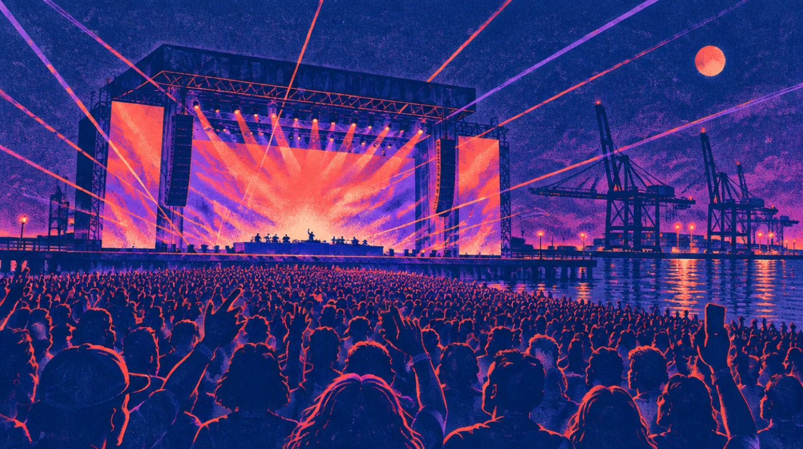
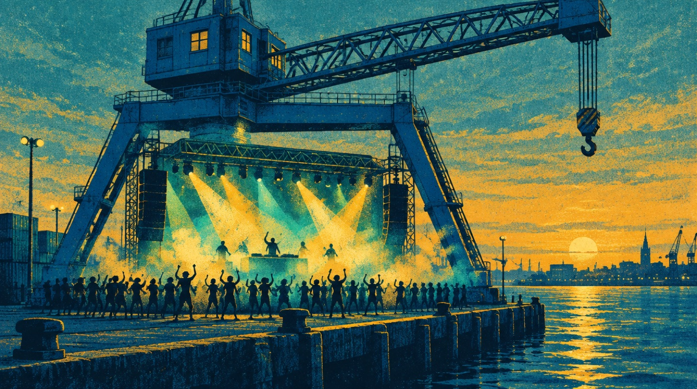
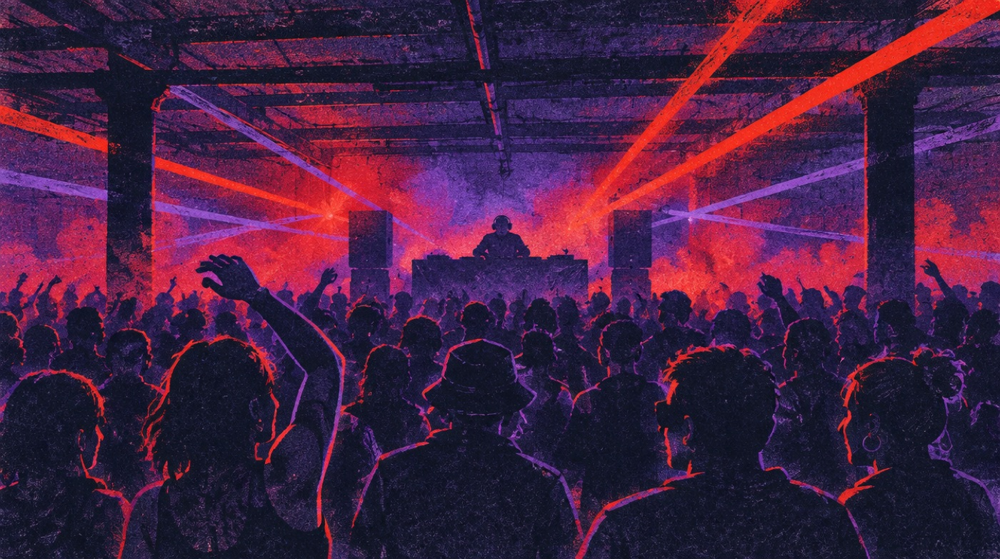

Portola,Saturday.
Ears in. Then go.
Gordon, with Dave and Trent, on the rail. Bring your ID, it is 21 and over, cashless, and your empty bottle, the refill stations are free.
Gate check: your June order was a payment plan and nothing in your mail confirms the last two payments. Open the AXS app before you reach the gate.
Star what you want. It flags the clashes.
Tap any name for the music, three artists it sounds like, and the ones you have already seen. Or pick a mood and the pier lights up.
Load Gordon's plan APlan A: USA v Peru first half at McTeague's on Polk, leave at halftime about 2:20, all of Oskar Med K at 3:40, Tove Lo at 5:40, Robyn at 7:10, Dog Blood at 9:00. Set times from the festival's official Saturday image, version 2, all five rooms, 31 sets.

Warm now, windy later, cold for Dog Blood.
Read at 12:14 PT from Open-Meteo for the pier itself. Sunset 7:01 PM. The wind doubles between 3 and 7, that is the layer, not the temperature. Refresh now
900 Marin Street.
Transit
T Third light rail to the Marin Street stop, then walk to the entrance at 900 Marin. Rideshare drop at the same address. No parking at Pier 80 at all. BART shuttles run during the festival.
Before the gate
21 and over, bring ID. Cashless, cards only. Empty reusable bottle for the refill stations. No professional cameras, no signs, no LED apparel. Charging lockers are a separate booking.
VIP
Priority entry lanes, VIP viewing areas, dedicated restrooms and merch, and the Farmhouse World dining room, reservations through OpenTable.
Despacio, two of them
On the official Saturday grid Despacio runs 2:45 to 9:45 as its own room. The festival's info page also lists a 5th birthday Despacio party at 401 Cesar Chavez, 5 to 11 PM, separate entrance and separate ticket. Ask at the gate which one your wristband opens.
USA v Peru, 1:30
American Outlaws SF watch at McTeague's Saloon, 1237 Polk Street. First half there, out at halftime, and you are on the pier before Oskar Med K.

Tap when the set gets slow.
A fact, a nudge, a memory, or confetti. Tap and see.
Find the craneTonight is your sixth Skrillex.
Second Sky, Oakland, 2022. Red Rocks with Brennan, 2023, five hours. The surprise set with Jamie xx on the Coliseum fifty yard line, 2023. Skrillex b2b Four Tet at HARD Summer, 2023. ISOxo b2b Skrillex at NiteHarts, 2025, with Brennan, Quinn and Mason. And tonight, Dog Blood, the first time you see him as half of it.
By your own word, you saw Dog Blood at Electric Zoo on September 1, 2019. If that is right, tonight closes a seven year loop. Dave and Trent are on the rail with you, eight years after you walked Dave into his first rave.

Counts to your next starred set; Dog Blood when nothing is starred.
Made by Darby for Gordon at Gordon's ask, Saturday 26 September 2026, 12:14 to 12:55 PT. Set times: portolamusicfestival.com official Saturday image, version 2. Venue, transit and policies: portolamusicfestival.com know before you go and FAQ pages. Weather: Open-Meteo hourly for 37.752, -122.381. Sunset: sunrise-sunset.org. Skrillex history: Gordon's live music ledger. Art: Higgsfield. Voice: ElevenLabs. 3D: three.js r128, MIT. Private page, not indexed.